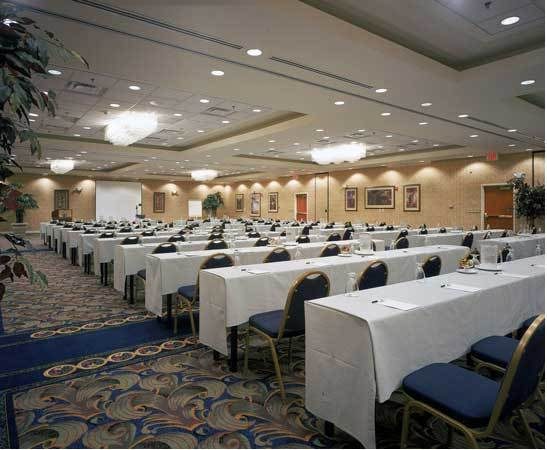

|  |
| Conference room at the Crowne Plaza |
|---|
In all parts of the world, whites are afraid to speak out in their own interests. Racial differences in IQ, the costs of “diversity,” the challenges of non-white immigration — politicians and the media dare not discuss what these things mean for whites and their civilization.
We are different. We believe these are vital questions.
| Speaker and Topic | Read | Watch | |
|---|---|---|---|
| Conference Report | Article | DVD | |
| Jared Taylor — “Welcome.” Mr. Taylor is editor of American Renaissance. He is the author of Paved With Good Intentions, and the primary contributor to the collection, A Race Against Time. | |||
| J. Philippe Rushton — “The Heritability of World IQ Differences.” Prof. Rushton teaches at the University of Western Ontario, and is the world’s foremost scholar of racial differences. He is the author of many books and articles, most notably, Race, Evolution, and Behavior. | DVD | ||
| Eugene Valberg — “Understanding the African Mind.” Dr. Valberg is an American philosopher who has lived for nearly 30 years in Africa. His observations have led him to surprising conclusions about what Africans think about themselves and whites. | DVD | ||
| Fred Reed — “Mexico From the inside: Who the Mexicans are, and Why They do What They do.” Mr. Reed’s irreverent and even subversive columns appear on the web site Fred On Everything. He is a Vietnam combat veteran who has written for Playboy, the Wall Street Journal, Soldier of Fortune, and many other publications. He lives in Mexico. | DVD | ||
| Martin O’Toole, Esq. — “Race and the Civil War.” Mr. O’Toole has a long interest in Southern history and American race relations. He will challenge a number of currently fashionable views about what he calls “the War for Southern Independence.” | DVD | ||
| Jared Taylor — “Why is There So Much Resistance to Race Realism?” Mr. Taylor is editor of American Renaissance. He is the author of Paved With Good Intentions, and the primary contributor to the collection, A Race Against Time. | DVD | ||
| Paul Gottfried — “Understanding Conservatism.” Prof. Gottfried teaches history and political science at Elizabethtown College, and is the author of many books. His most recent is Conservatism in America: Making Sense of the American Right. | DVD | ||
 |
Ashley Mote — “I Want My Country Back.” Mr. Mote is a member of the European Parliament for the South East Region of Britain. He is the author of Vigilance — A Defence of British Liberty and OverCrowded Britain, which is a dissection of Britain’s immigration crisis. | DVD | |
| Bruno Gollnisch — “What Lies Ahead for France and the National Front.” Dr. Gollnisch is the second-ranking executive of the French National Front, and a member of the European Parliament, where he is chairman of the group, Identity, Tradition, Sovereignty. He is a professor of Japanese at the Univesity of Lyons, and holds the rank of Capitaine de Frégate in the French naval reserve. | DVD | ||
| Michael Walker — “What Can I Do?” Mr. Walker is editor of The Scorpion, and the only English-speaking writer commonly considered to be an important figure in the European New Right. | Article | DVD | |
| Sam G. Dickson, Esq. — “A Benediction for Heretics.” Mr. Dickson is a long-time racial activist. This is his eighth appearance at an AR conference. | DVD | ||
Also appearing: Gordon Baum of the Counsel of Conservative Citizens.